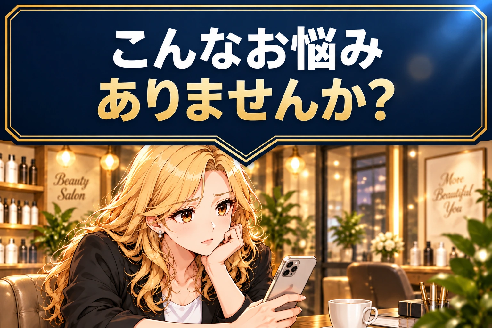
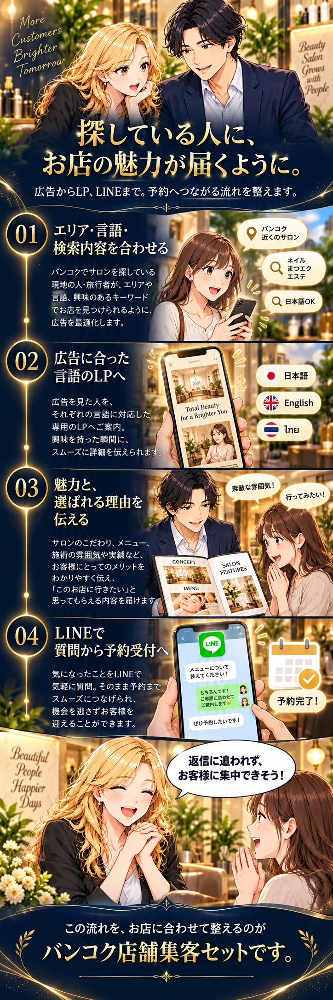
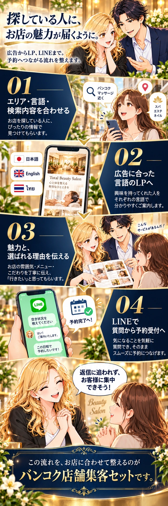
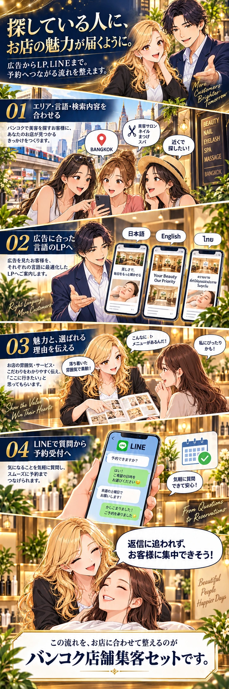

見出し A
細い内枠・切り落とし角
外枠と細い内枠を三角まで連続させた、落ち着いた形。
画像をタップして拡大
バンコク店舗集客セット
紺とゴールドを軸に、各3案。
見出しとクロージングは、別々の案を選べます。
01 / 見出し
紺色の三角にも二重の縁取りを付け、次の漫画へ自然につながる形にします。
見出し A
外枠と細い内枠を三角まで連続させた、落ち着いた形。
画像をタップして拡大
見出し B
角を四角く保ち、枠と三角の存在をはっきり見せる形。
画像をタップして拡大
見出し C
浅く幅広い三角で、見出しから漫画へのつながりを大きく見せる形。

画像をタップして拡大
02 / 広告説明のまとめ
広告の設計 → 言語に合うLP → お店の魅力 → LINE予約。
その先のお店の姿まで、縦に読み進める構成です。
クロージング A
紺の背景に、左の番号と金色の線。説明と場面を並べ、順番をわかりやすく伝えます。

画像をタップして拡大
クロージング B
大きな番号と紺の説明面を左右交互に配置。絵と文章を、ひとつずつ追いやすくします。

画像をタップして拡大
クロージング C
お店を探す場面から接客まで、漫画を主役に展開。最後は白い枠でセット名を印象づけます。

画像をタップして拡大